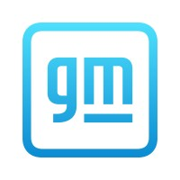
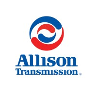
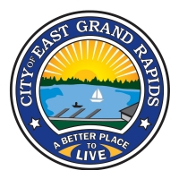
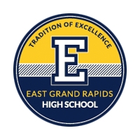
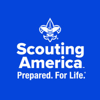

Passionate about solving complex problems and creating efficient systems.
About Me
I'm an electrical engineer passionate about problem-solving, technology innovation, and continuous learning.
From a young age, I've been fascinated by how things work and how they can be improved. What excites me most
about electrical engineering is the ability to make a tangible impact, whether optimizing industrial
processes or developing innovative solutions.
I believe combining technical expertise with creativity is a powerful approach to tackling challenges from
multiple angles. Whether designing control systems or coding personal projects, I enjoy connecting ideas to
practical applications. For me, engineering isn't just about building things; it's about creating solutions
that matter and push boundaries to improve everyday lives.
Currently, I'm seeking my first full-time role in automotive engineering. Before graduating in December
2025, I've gained hands-on experience in software development, manufacturing controls, system integration,
and related fields, preparing me to contribute effectively from day one.
My Experience

Controls Engineering Intern
General Motors (Factory ZERO Plant) • Internship
May 2025 - Aug 2025 • 3 Months
Detroit, Michigan • On-site
Designed and implemented a PLC interlock system to enforce bolt rundown order during drive unit
installation, reducing caster variation by 25% over a 73-vehicle trial.
Led in-house development of UI and integration software for a 12-camera 3D bead inspection
system, collaborating with a contractor on the vision processing backend.
Built a custom JavaScript/HTML5 dashboard to correlate AI shim predictions with camber data,
streamlining analysis across 300+ vehicles.
Resolved 60+ logged automation faults and supported plant systems using PLCs, HMIs, and embedded
tools under GCCS standards.
Presented project outcomes and in-house solutions to mid- and senior-level plant leadership,
emphasizing technical rigor and measurable quality improvements.
Undergraduate Teaching Assistant
Purdue University (ECE Department) • Part-time
Aug 2024 - May 2025 • 9 Months
West Lafayette, Indiana • On-site
Assist faculty by grading assignments and exams for sophomore-level ECE seminar courses,
ensuring timely and consistent evaluation.
Provide support to students by clarifying course materials and fostering a positive learning
environment.
Controls Engineering Intern
General Motors (Wentzville Assembly Plant) • Internship
May 2024 - Jul 2024 • 3 Months
Wentzville, Missouri • On-site
Engineered and deployed a 3-part system for monitoring chain conveyor take-up pressures,
featuring a macro-enabled Excel tool to auto-extract PLC data.
Configured and trained AI-based camera systems to identify operator assembly errors.
Applied controls standards to implement PLC and HMI upgrades on the production floor.
Independently designed a Microsoft Access database to streamline personnel management,
addressing a self-identified workflow gap.
Introduced a new plant-wide standard for personnel training and assignment tracking by
collaborating directly with plant leaders.
Presented project outcomes and technical overviews to plant executives and leadership.
Honors Hall Student Office Staff
Purdue University (West Lafayette Campus) • Part-time
Jan 2024 - Apr 2024 • 4 Months
West Lafayette, Indiana • On-site
Supported residents and staff with front desk operations, including mail, key access, equipment
checkouts, and move-in/out logistics.
Filled shift gaps as needed and assisted in other campus housing facilities during off-season
periods.
Completed training to ensure compliance with Indiana residential safety and conduct standards.
Engineering Group Intern
Honda of America (Indiana Automotive Plant) • Internship
May 2023 - Aug 2023 • 4 Months
Greensburg, Indiana • On-site
Designed and installed a custom control circuit to cool vehicle surfaces post-oven, enhancing
safety.
Upgraded the plant's AVEVA WonderWare data system
Implemented bespoke software tools for process data collection.
Gained experience with industrial protocols (EtherNet/IP, FINS) and systems (NE1S PLCs, NS10
PTs).
Completed lockout/tagout safety certification.

Data Systems Electrical Engineering Intern
Allison Transmission (Indiana HQ) • Internship
May 2022 - Aug 2022 • 4 Months
Indianapolis, Indiana • On-site
Sole developer of an internal tool suite for real-time sensor display and test parameter control
in transmission testing. This internal suite is still in use as of December 2024.
Collaborated with supervisors to iterate and validate software across engineering teams.
Participated in the setup and maintenance of data acquisition systems and departmental tools.
Maintained detailed technical documentation for internal use and compliance

Seasonal Grounds Maintenance
City of East Grand Rapids, MI • Seasonal
May 2021 - Aug 2021 • 4 Months
East Grand Rapids, Michigan • On-site
Maintained all city landscape areas, nature trails, & irrigation systems.
Prepared & maintained all city & school athletic facilities.
Performed set-up & take-down of athletic equipment for practices & events.
Operated city vehicles & equipment.
My Approach
My approach to engineering and problem-solving revolves around my aforementioned combination of knowledge
with creativity, alongside principles of collaboration and persistence. I believe that every new challenge
presents an opportunity for me to learn and grow. When I encounter a problem, my first instinct is to pull
it apart, find what makes it tick, and innovate it out of the way.
I am also a firm believer in the power of collaboration with everyday people. The best solutions to a
problem can often come from a wide array of diverse perspectives, and by working alongside people who are
passionate, driven, and unafraid to share their ideas, we can all thrive as a collective group. By
exchanging knowledge and expertise, we can create better-engineered, more effective solutions that achieve
something much greater than what any one person could do alone.
Ultimately, my personal and professional work is driven by a desire to contribute to something in the bigger
scheme of it all. Whether I'm developing a new product, being mentored by (or mentoring) others, or
improving systems, I strive to leave a positive impact on everything I touch.
My Education
Purdue University
Aug 2024 - Present
Undergraduate Student
Anticipating graduation in December 2025.
Prior resident in the Engineering in the World of Data Learning Community (2021 - 2022).
Pianist in various jazz bands (AMRE, LJB1, LJB2, CJB1).
Member and chairperson of the Purdue Chapter of the Institute of Electrical & Electronics
Engineers Computer Society (IEEE CS).

East Grand Rapids High School
Aug 2017 - May 2021
High School Diploma
Achieved a final GPA of 3.8 and an ACT score of 32.
Graduated Magna Cum Laude.
Participated in the National Honor Society & Honors Science.
Completed electives in engineering, design/drafting, & AP computer science.
Completed 3 yrs of Latin/IB; Latin club member.
Member and electrical/programming lead of FRC (First Robotics Competition) team 5980, East Grand
Rapids Robotics.
My Passions
As an engineer, I am passionate about utilizing emerging technologies such as artificial intelligence and
good old automation to solve real-world problems. I'm always excited to explore how these trending concepts
can be applied to improve processes, predict upcoming results, and possibly even help prevent critical
errors before they happen.
I also have a deep interest in exercising sustainable engineering practices. With the world facing
significant environmental and resource challenges, I've got an eye on new ways to explore how we can use
innovation to create more efficient, environmentally-friendly solutions that can have a positive impact on
both industry and our planet.
Outside of traditional engineering, I've always enjoyed tinkering with electronics and putting together side
projects, whether it's a new device, piece of software, or a complex automation system. These personal
projects allow me to solve life problems by testing new ideas, exploring new technologies, and staying
curious, no matter where the world takes me.
Volunteer Work

Eagle Scout
Boy Scouts of America
Managed, fundraised & led Eagle project: Benches for the Humane Society of West Michigan.
Mentored new & incoming scouts; led patrol unit of six scouts.
Participated in & led community/conservation service projects; setup rotating family shelter.
Participated in unique outdoor activities such as EMS disaster simulation, wilderness survival.
My Vision
As I continue to grow as an engineer and as a person, I'm eager to explore new frontiers in manufacturing
robotics, and automation. My goal is to eventually lead innovative projects that not only improve the
overall efficiency of industries but also contribute to a more sustainable future that we can be excited to
live in. I'm excited about the opportunity to work on projects that challenge my personal creativity and
push my technical abilities to new limits.
In the long run, I aspire to take on intimate leadership roles where I can mentor the next generation of
engineers and be part of the teams that create truly life-changing solutions. Whether it's within a large
company or through a tight-knight startup venture, I hope to collaborate with all manner of diverse minds to
bring big ideas to life.
Let's Connect
If you're interested in collaborating with me or just want to learn more about my personal and professional
work, feel free to reach out. Whether it's an idea for a project, something to chat about, or engineering
insights, I'd love to hear from you!